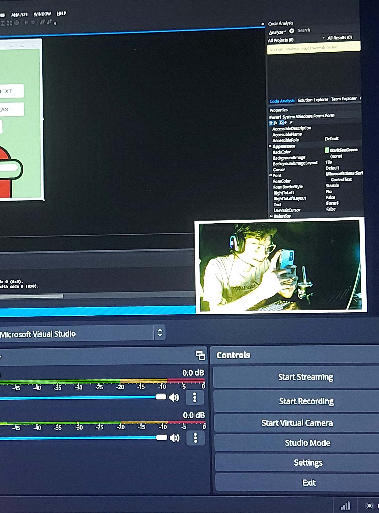
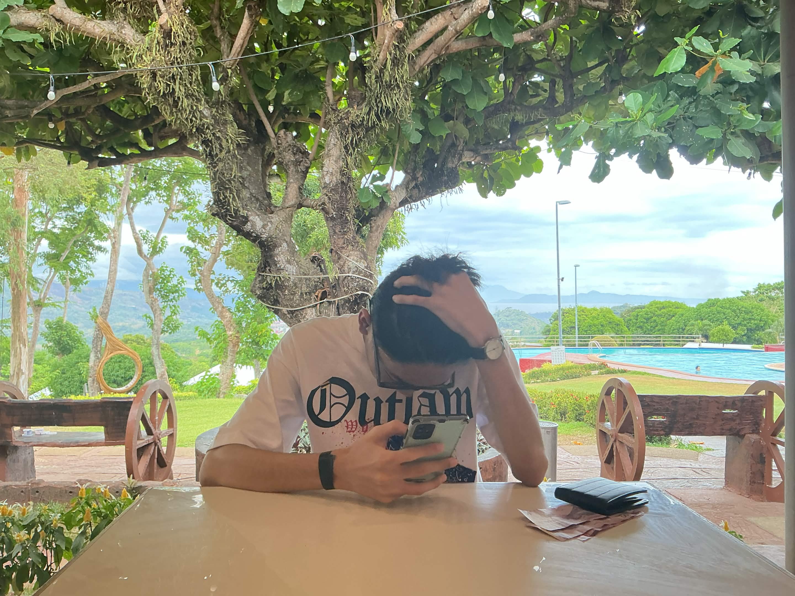
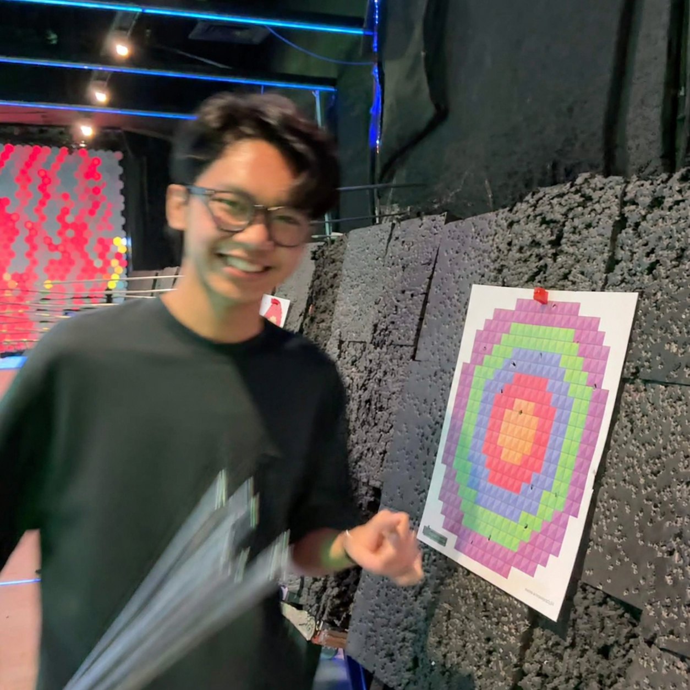
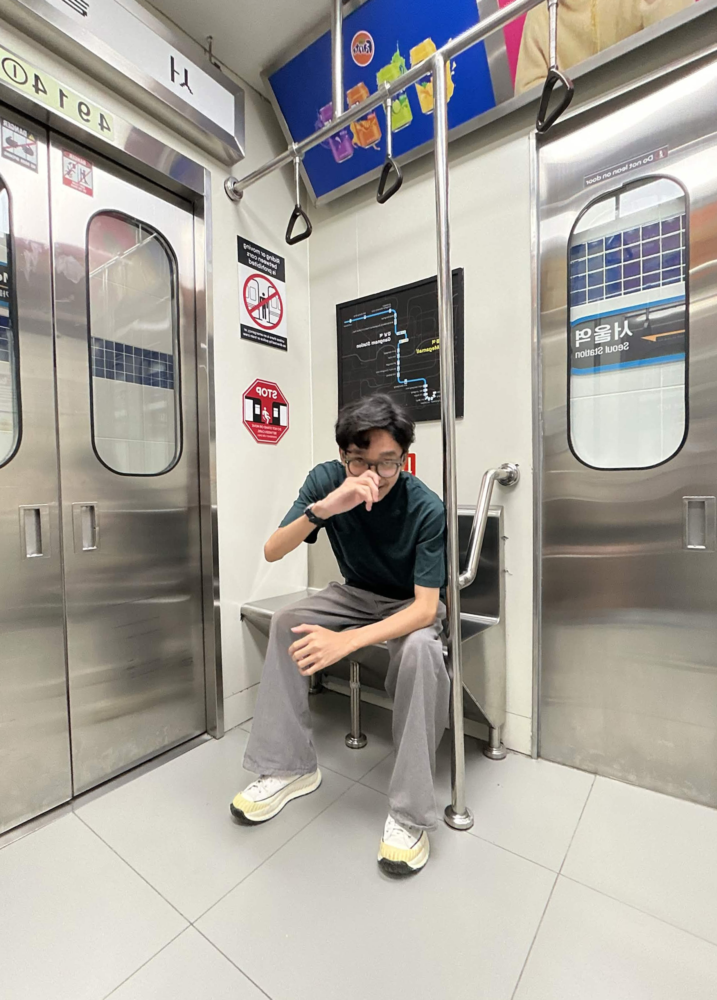
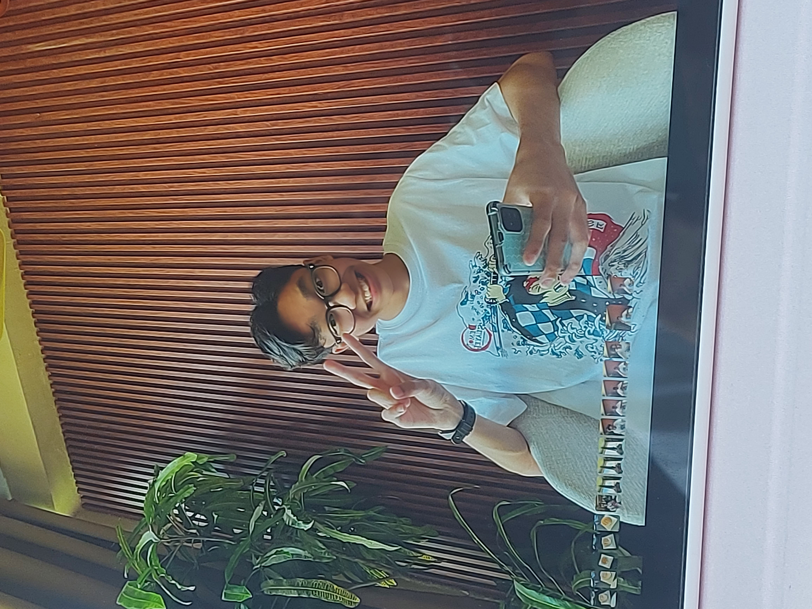
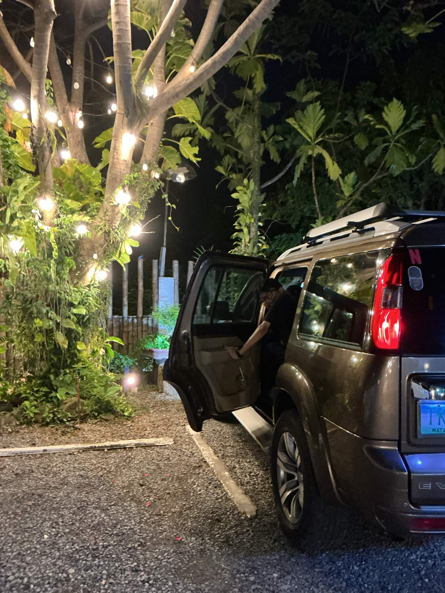
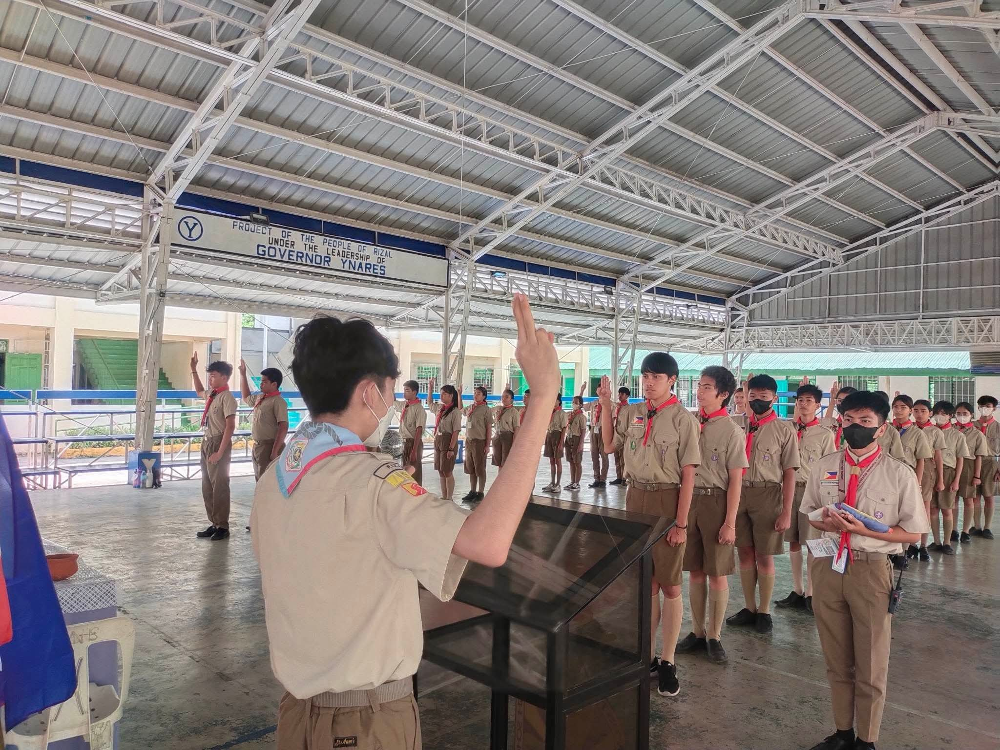
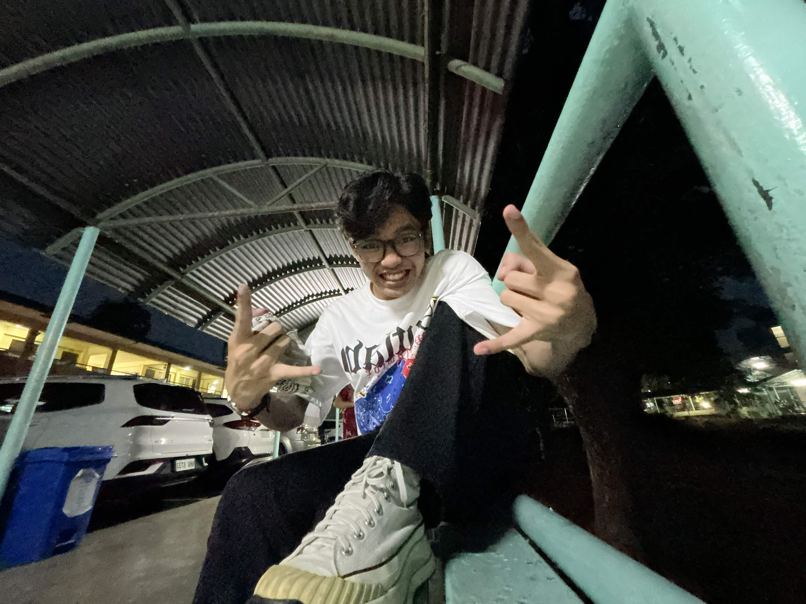
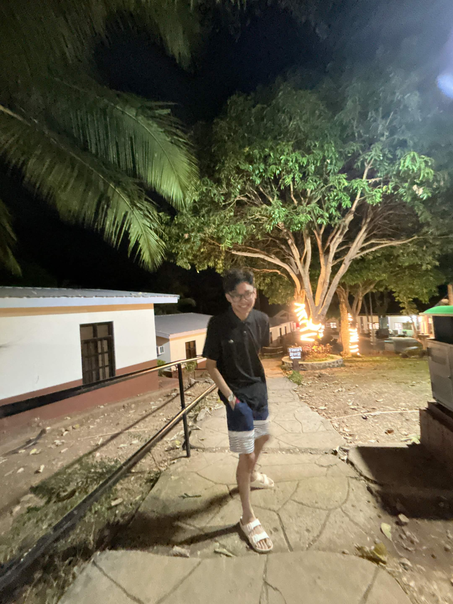

Sabriel Adriel San Agustin
IT Junior & Freelancer
I'm an IT student and freelancer with a deep passion for technology that started when I was young. My curiosity grew from exploring skills, software, and digital tools on my own, turning that early interest into a drive to explore, experiment, and build.
Now I'm exploring various areas of tech, and I'm discovering my real passion lies in cybersecurity, particularly in OSINT investigation. It’s a field that challenges me to think critically, stay curious, and continuously learn.
I believe in taking initiative — when you see a problem or an opportunity, dive in, build, and experiment. Test your ideas, learn from mistakes, and keep improving along the way. Every step is a chance to grow and make a difference.
How It All Started
Where my interest in tech began
As a kid, I was naturally drawn to computers and the digital world, often spending time exploring, testing things, and trying to understand what was happening behind the screen. What began as simple exploration slowly turned into a genuine passion.
That young kid in the photo was fascinated by how things worked and the endless possibilities of the digital world. From those early moments of curiosity and exploration, I’ve grown into someone who builds, creates, and pushes beyond what I thought was possible.
It’s a reminder that every expert was once a beginner. Every skill and achievement starts with curiosity and a willingness to learn. That same spirit drives me today, as I continue to stay curious, keep learning, and push myself to improve beyond what I already know.

Life, As It Is
A collection of moments that reflect who I am beyond the screen












